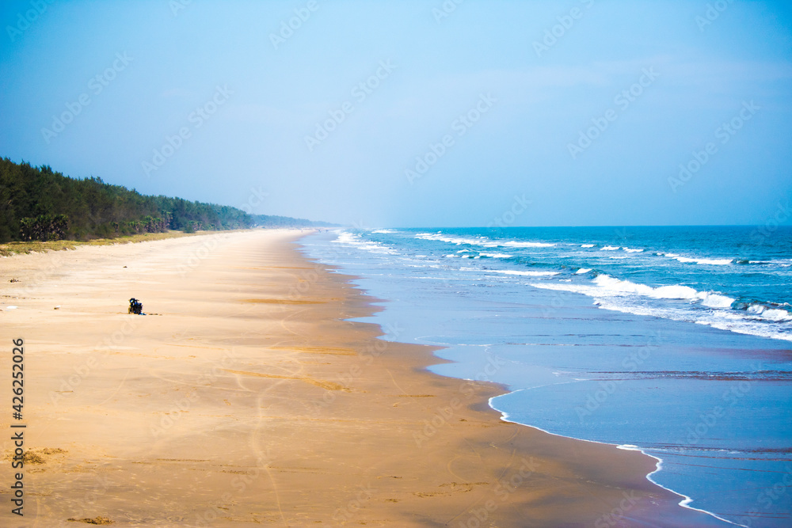

Kakinada Beach
Kakinada Beach is a beautiful and serene beach located in Kakinada. It is a popular spot for locals and tourists alike, offering stunning views of the Bay of Bengal, a peaceful ambiance, and opportunities for beach activities.
Location: Kakinada, Andhra Pradesh, India
Activities: Swimming, beach walks, picnics, photography
Transportation: Easily accessible by road, located near major bus routes and the Kakinada railway station.